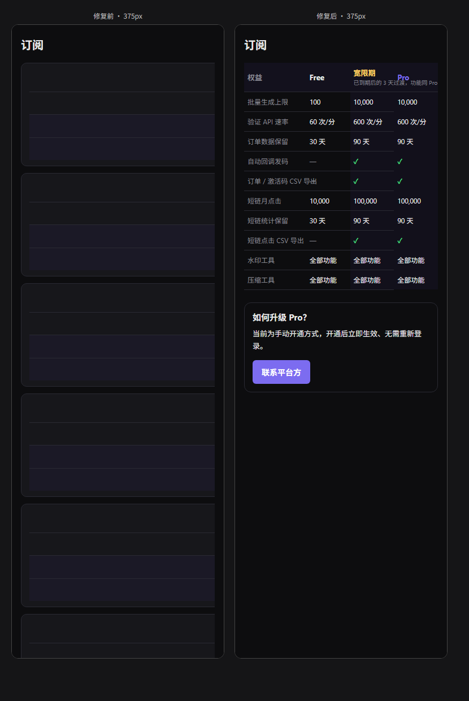
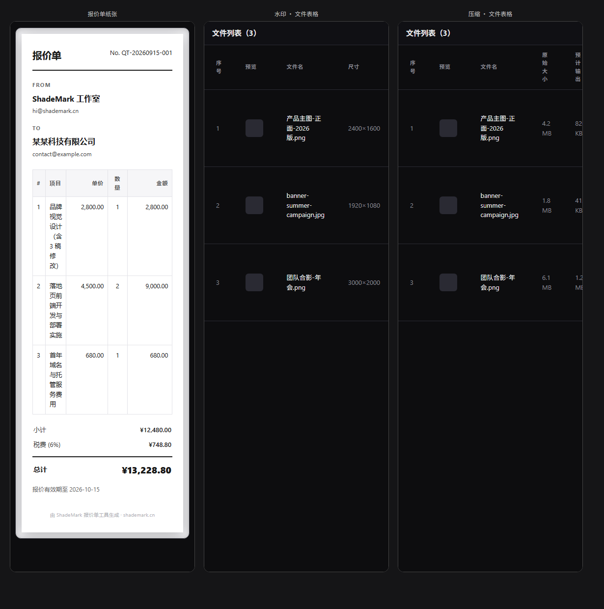
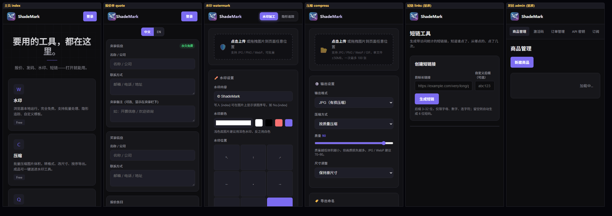
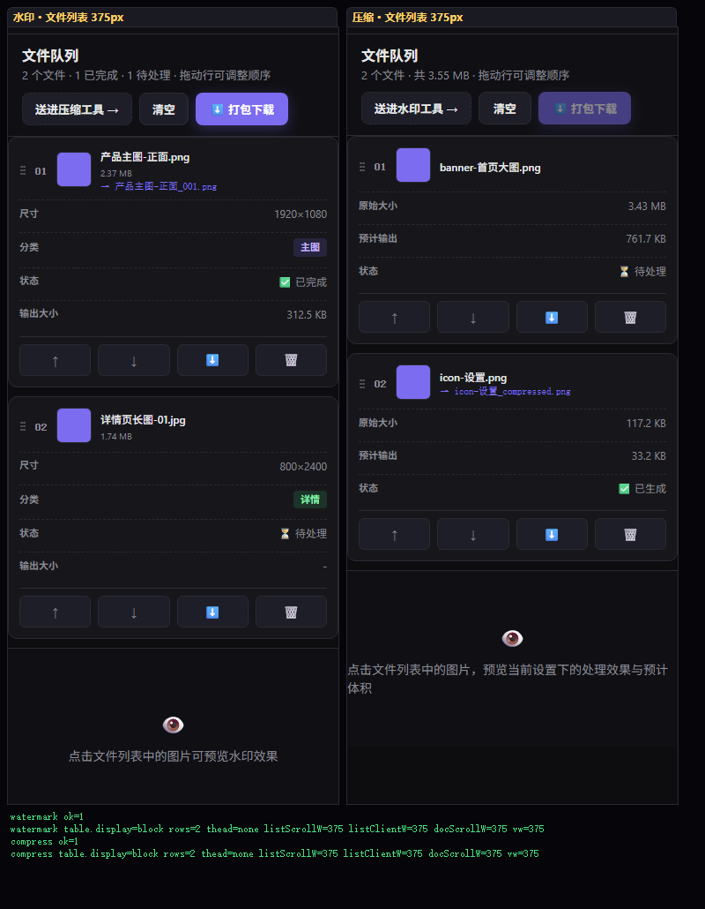
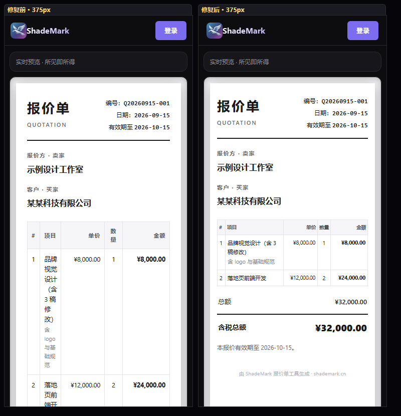
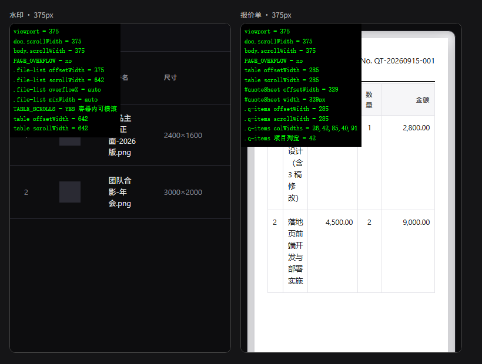

起因：admin 订阅页的权益对比表在窄屏塌陷。审计范围：全部 11 个页面源文件。结论：同类缺陷只此一处（已修），另发现 2 处体验问题。
| 页面 | 表格 | 列数 | 状态 |
|---|---|---|---|
| admin.html · 订阅 | .sub-table | 4 | 已修复 |
| admin.html · 商品/激活码/订单/密钥 | 4 个表 | 5–9 | 正常 |
| links.html · 短链列表 | table | 6 | 正常 |
| platform.html · 用户 / 联系消息 | 2 个表 | 6 | 正常 |
| watermark/index.html · 文件列表 | .file-table | 8 | 已修复 |
| compress/index.html · 文件列表 | .file-table | 7 | 已修复 |
| quote.html · 纸张条目表 | .q-items | 5 | 已修复 |
| index / store / privacy / order-query / login / forgot / reset | 无表格 | — | 正常 |
「表格塌陷」这类缺陷的触发条件很具体：页面有 @media(max-width:820px) 卡片化规则，且表格的 <td> 没有 data-label。全项目只有 admin 的 .sub-table 同时满足两条 —— 它是脚本生成、却没写 data-label 的唯一一个表格。
左侧修复前：表格塌成一叠空卡片。原因是 .sub-table{min-width:520px} 用类选择器压过了媒体查询里裸 table 的 min-width:0，表格保持 520px 宽；卡片化后的 td 又是 justify-content:space-between，把文字推到 520px 处的右端 —— 正好落在视口外，于是整片空白。
右侧修复后：四列完整保留，数值各归其位。

它们逐个都写了 data-label，例如 admin 的商品表 <td data-label="价格">、platform 的用户表 <td data-label="到期状态">、links 的短链表 <td data-label="点击量">。卡片化后 td::before 能正确取到列名，所以窄屏表现正常。
水印页 8 列、压缩页 7 列。实测水印页文件表宽 642px，而手机内容区只有 375px —— 必须横向滚动才能看到「分类 / 状态 / 输出大小 / 排序操作」。
好消息：.file-list{overflow-x:auto} 生效，整页不会溢出（实测 PAGE_OVERFLOW = no），只是表格在容器内滚动。可用，但操作按钮藏在屏幕外。

固定列宽合计 314px（# 28 + 单价 110 + 数量 52 + 金额 124），在 375px 屏幕上占掉绝大部分宽度，留给「项目」的只剩 42px，导致项目名称竖排成一字一行。
同样不溢出（PAGE_OVERFLOW = no）。但可读性差 —— 而报价单是要发给客户看的核心文档，用户在手机上核对时体验不好。
基准 = 短链工具（links.html）与发码平台（admin.html）。修复前四处不一致：index 的 padding 是 32px/gap 28px 且断点在 800px；quote 是 20px/20px 且 ≤560px 时 flex-wrap:wrap 换成两行；watermark（断点 1020）与 compress（断点 900）在手机上同样换行成两行。




@media(max-width:820px) 下改为卡片式（每行一张卡，文件名做主标题，其余字段「标签 + 值」两栏）。要动 JS 生成的行结构，改动量中等；也可只先缩减 padding:12px 24px 缓解。窄屏结论全部来自真实渲染，非推断：用 Edge headless 配合 iframe 锁定 375px 视口截图（cmd.exe 在沙箱被禁，agent-browser 无法启动，故改用 Edge 原生 headless），并在页面内注入脚本直接读取 offsetWidth / scrollWidth / getComputedStyle 的实测值。